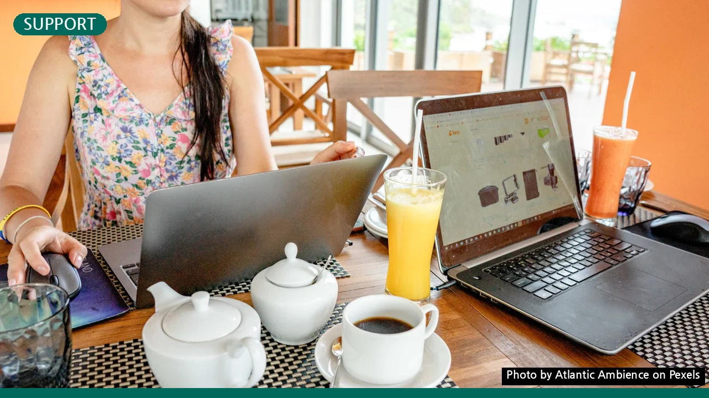
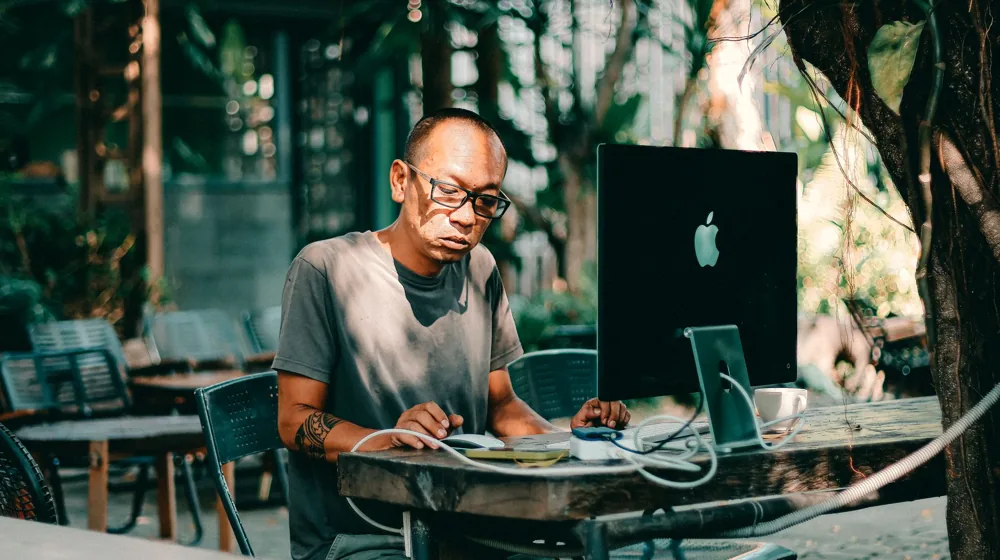

지자체 워케이션, 이것 놓치면 후회! 실제 경험과 주의할 점
사진: Atlantic Ambience / Pexels (무료 이미지, 출처 표기)
새로운 워케이션 트렌드, 지자체 지원사업을 주목해야 하는 이유

새로운 업무 환경과 특별한 경험을 꿈꾸며 워케이션(Work+Vacation)을 계획하는 분들이 많습니다. 특히 최근에는 단순히 개인적인 여행을 넘어, 각 지자체에서 직접 숙소나 프로그램 비용을 지원해주는 워케이션 지원사업이 큰 인기를 끌고 있습니다. 일과 휴식을 병행하며 지역 경제 활성화에도 기여하는 이 프로그램은, 2026년 11월 현재 다양한 형태로 운영되고 있습니다.
성공적인 워케이션을 위해서는 나에게 맞는 지원사업을 현명하게 선택하고, 사전에 충분히 준비하는 것이 중요합니다. 이 글에서는 지자체 워케이션 지원사업의 주요 유형부터 실제 참여 후기, 그리고 놓치지 말아야 할 핵심 주의사항까지 상세히 안내해 드립니다.
나에게 맞는 워케이션 유형 찾기: 숙소 지원 vs. 프로그램 지원
지자체 워케이션 지원사업은 지역별로 그 형태가 다양하지만, 크게 '숙소비 지원'과 '프로그램/교통비 지원'으로 나눌 수 있습니다. 각 유형의 장단점을 명확히 파악하고 본인의 워케이션 목적에 맞는 것을 선택해야 만족도를 높일 수 있습니다.
일부 지자체는 두 가지 유형을 모두 제공하거나, 워케이션 중 업무 공간(코워킹 스페이스)을 지원하기도 합니다. 각 지자체 홈페이지나 워케이션 전담 기관에서 제공하는 정보를 꼼꼼히 확인하는 것이 필요합니다.
성공적인 워케이션 신청 절차와 준비물
지자체 워케이션 지원사업에 신청하는 과정은 몇 가지 공통적인 단계를 거칩니다. 2026년 11월 기준으로 일반적인 신청 절차는 다음과 같습니다.
- 정보 탐색 및 프로그램 선택: 각 지자체 워케이션 전용 홈페이지나 문화관광 관련 페이지에서 현재 진행 중인 지원사업을 찾아봅니다. 지원 기간, 대상, 내용, 예산 등을 확인하고 본인에게 맞는 프로그램을 선택합니다.
- 신청 자격 확인: 일반적으로 만 19세 이상 대한민국 국민 중 재직증명서, 사업자등록증 등을 통해 재직 또는 사업 활동 증명이 가능한 경우가 많습니다. 지자체에 따라 주소지 또는 재직 기업의 위치 제한이 있을 수 있으니, 상세 자격 조건을 반드시 확인해야 합니다.
- 신청서 작성 및 제출: 온라인 신청 시스템을 통해 신청서와 필요한 서류(재직증명서, 4대보험 가입내역확인서 등)를 제출합니다. 지원 동기나 워케이션 계획을 묻는 경우가 많으므로 미리 준비하는 것이 좋습니다.
- 선발 및 결과 통보: 서류 심사 또는 추첨을 통해 선발되며, 결과는 개별 통보됩니다.
- 워케이션 실행 및 정산: 선정된 후에는 안내에 따라 워케이션을 진행하고, 관련 영수증이나 후기 작성 등의 정산 절차를 밟게 됩니다.
제출 서류는 프로그램별로 상이할 수 있으므로, 반드시 해당 지자체나 운영사의 공고문을 기준으로 준비해야 합니다. 신청 마감일을 놓치지 않도록 주의하세요.
실제 참여자 후기에서 얻은 워케이션 장점과 아쉬운 점
지자체 워케이션에 참여했던 사람들의 후기를 종합해보면, 다양한 장점과 함께 개선이 필요한 부분도 있었습니다. 주요 내용은 다음과 같습니다.
- 장점:
- 비용 절감: 숙소비 지원으로 여행 경비를 크게 줄일 수 있었다는 의견이 많습니다.
- 새로운 환경에서의 업무 효율: 익숙한 사무실을 벗어나 새로운 풍경 속에서 업무에 집중할 수 있었다는 피드백이 있었습니다.
- 지역 문화 경험: 프로그램 지원형의 경우, 현지인처럼 지역을 경험할 수 있어 만족도가 높았습니다.
- 아쉬운 점:
- 네트워크 환경: 일부 숙소나 지역에서는 불안정한 인터넷 환경으로 인해 업무에 어려움을 겪었다는 후기가 있습니다.
- 교통 불편: 대중교통이 발달하지 않은 지역에서는 이동의 불편함을 호소하기도 했습니다.
- 프로그램의 다양성 부족: 제공되는 프로그램이 제한적이거나, 개인의 관심사와 맞지 않는 경우가 있다는 의견도 있었습니다.
이러한 후기들을 참고하여 본인의 업무 특성과 여행 스타일을 고려한 프로그램을 선택하는 것이 중요합니다.
이것만은 꼭! 지자체 워케이션 참여 시 주의할 점
성공적인 지자체 워케이션을 위해 반드시 염두에 두어야 할 주의사항들이 있습니다. 간과하면 예상치 못한 불편함을 겪을 수 있으니 신청 전 꼭 확인하시길 바랍니다.
- 정확한 자격 조건 확인: 프로그램별로 연령, 거주지, 직업 등 세부 자격 조건이 다릅니다. 조건을 충족하지 못하면 선발되더라도 취소될 수 있으니, 공식 공고문을 통해 면밀히 확인해야 합니다.
- 인터넷 및 업무 환경 점검: 워케이션의 핵심은 '업무'입니다. 숙소 또는 코워킹 스페이스의 인터넷 속도, 콘센트 개수, 조용한 업무 환경 등 본인의 업무에 필요한 인프라가 잘 갖춰져 있는지 미리 확인하는 것이 좋습니다.
- 교통편 및 지역 정보 사전 조사: 워케이션 지역의 대중교통 이용 가능 여부, 주요 관광지와의 거리, 편의시설 등을 미리 파악하여 이동 계획을 세우세요. 렌터카가 필요할 수도 있습니다.
- 취소 및 변경 정책 확인: 개인적인 사정으로 워케이션 일정을 변경하거나 취소해야 할 경우, 지원금 환수나 불이익이 있을 수 있습니다. 사전에 해당 정책을 명확히 알아두어야 합니다.
- 지원금 정산 기준 확인: 지원금을 받는 경우, 사용 내역 증빙 방법이나 정산 기간 등을 숙지해야 합니다. 영수증 미비 등으로 인해 지원금이 지급되지 않는 불상사를 막기 위함입니다.
이 외에도 각 프로그램이 요구하는 사항은 다양합니다. 궁금한 점이 있다면 주저하지 말고 해당 지자체 담당자나 워케이션 운영사에 직접 문의하여 해결하는 것이 가장 정확합니다. 모든 정보는 2026년 11월 기준으로 작성되었으며, 정확한 사항은 공식 홈페이지나 해당 기관에서 다시 확인하시길 권장합니다.
🔗 이 글도 함께 보면 좋아요: 소상공인 정책자금 신청, 이것 놓치면 후회! 성공률 높이는 핵심 체크리스트